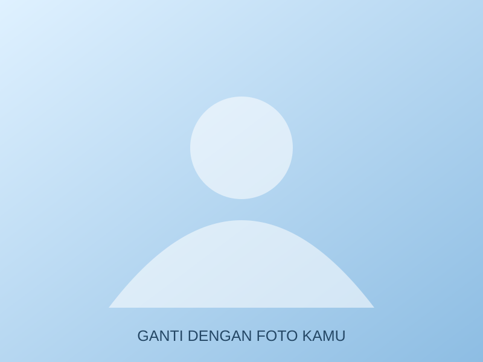
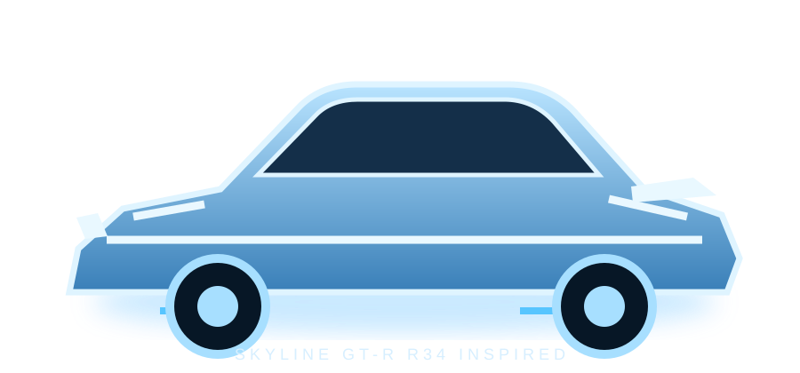

01 / OUTDOOR
Nature & Exploring
Jalan-jalan ke alam, menikmati pantai, air terjun, dan pemandangan baru.

PERSONAL WEBSITE / AUTOMOTIVE EDITION
Hi, I'm Syahla. Welcome to my little corner — a mix of personal stories, favorite things, music, and automotive dreams.
MEET THE DRIVER ↓01 / DRIVER PROFILE

I'm Syahla Sabrina Nugraheni, a student of Information Management. I enjoy collecting little moments, exploring new places, listening to music, and spending time on things that make me happy.
02 / OFF THE TRACK
A few things that make my days more colorful.

Jalan-jalan ke alam, menikmati pantai, air terjun, dan pemandangan baru.

Menonton konser dan menikmati musik secara langsung.

Main game untuk hiburan dan mengisi waktu luang.

Mencoba jajanan dan menemukan tempat makan yang menarik.
03 / ON REPEAT
Musik yang sering menemani hari-hariku.
04 / DREAM GARAGE
Ikon JDM yang identik dengan Brian O'Conner dari Fast & Furious.
Sport coupe impian dengan desain tegas dan karakter performa tinggi.
05 / KEEP IN TOUCH
Thanks for visiting Syahla's Garage. Feel free to say hello!